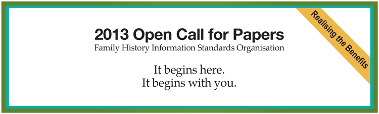

On March 22nd, 2013, FHISO launched a
Call-for-Papers initiative.
The most pressing requirement is currently a standard Data Model for the ‘exchange and long-term storage of genealogical and family history data’. Proposals for this may be of a technical nature, directly contributing to the design, or functional requirements that must be met by any subsequent design. However, even technical proposals must be accompanied by use-cases to illustrate their value and applicability.
Beyond this Data Model standard, FHISO will be involved in all data standards related to genealogy and family history. Another proposal type is, therefore, one identifying a further area needing standardisation.
The following broad proposal types may be submitted:
- Technical proposal. A description of design elements to be included in the Data Model standard. It should include use-cases to justify the requirement.
- Functional Requirements. A description of a requirement that must be supported by the Data Model standard. This might be related to global or cultural variations, historical differences, existing software functionality, etc.
- An area requiring standardisation. Most contributions will likely be towards the Data Model standard but we also need to look ahead to other areas that may require their own, distinct standards.
The aforementioned link provides some real examples of proposals already submitted.
All proposals will be made publicly readable, and members may submit comments on proposals that they believe will enhance the later design process.
FHISO would like to emphasise that this isn't just soliciting technical papers. FHISO also require functional requirements and use-cases that must be supported by the standards, and especially ones that apply worldwide.